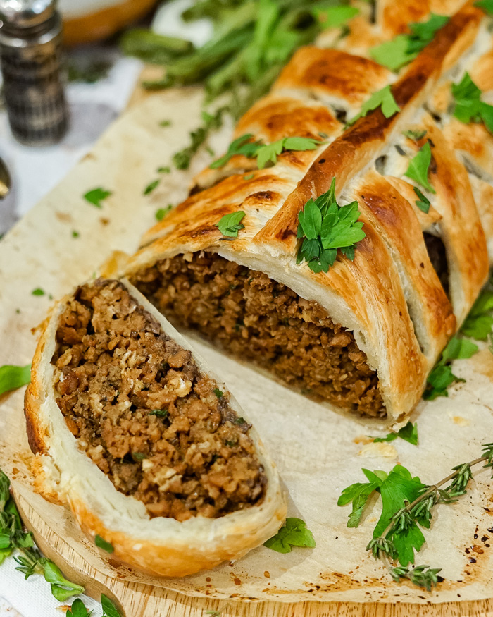
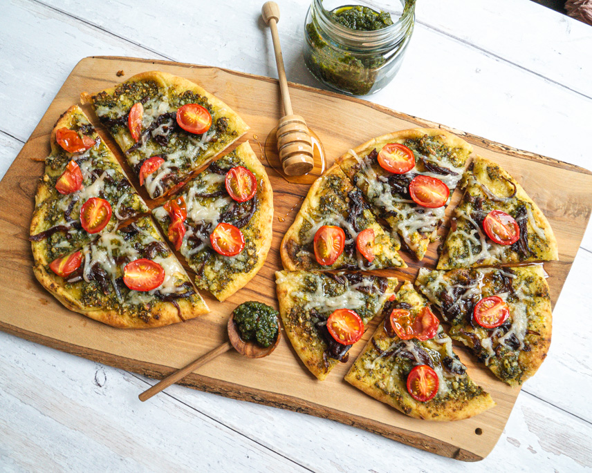
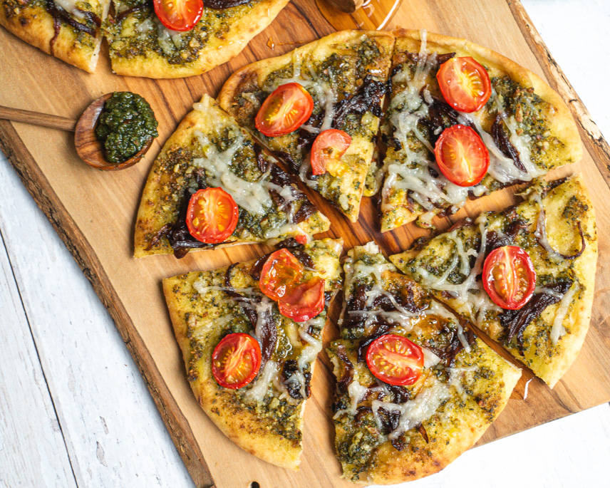

Kate's Mindful Makes
Our thoughtfully crafted recipes are better for your body and
for the earth!
RECIPE NAVIGATION
Vegan Beef Wellington
Cuisine: Great Britain
Total Time: 50 minutes
Serves: 4-6 servings
Author: The Edgy Veg

Ratings
A Note From the Author:
This vegan beef wellington recipe uses 15-ingredients and super
easy to make for any holiday or dinner party. I’ll show you how
to make vegan wellington using an easy meaty filling &
puff-pastry which makes it super easy & delicious.
Ingredients
- 1/2 cup water
- 1- tsp no-beef, or vegetable bouillon of choice
- 1 lb ground seitan or ground veggie beef
- 1 tsp garlic powder
- 1/2 tsp onion powder
- 1 tsp fresh thyme, minced (or 1/2 tsp dried)
- 1/4 cup rolled oats
- 2 tbsp olive oil
- 4 cloves garlic, minced
- 1 cooking onion, minced
- 2 cups finely chopped mushrooms
- 1/4-1/2 cup red wine
- 1 tbsp fresh parsley, minced
- sea salt
- ground black pepper
- 1/4 cup unsweetened soy, almond or oat milk
- 2 tsp agave or maple syrup
- 1 sheet vegan puff pastry, thawed
Directions
-
In a medium saucepan, heat water over medium-high heat. Add
bouillon and stir until dissolved.
-
Add seitan or veggie ground beef, garlic powder, onion powder,
and thyme, and bring the mixture to a boil. Cover and reduce
heat to a simmer. Stirring frequently, until the water has
reduced.
-
Remove from heat and stir in rolled oats. Keep stirring while
the mixture cooks for another 3 mins.
-
Remove from heat, and season with salt and pepper. Allow it to
cool completely.
-
Meanwhile, in a large pan, heat oil over medium-high heat. Add
minced garlic, onion, and mushrooms and cook until onions are
soft and translucent, and mushrooms are browned roughly 5-10
minutes. If the garlic is browning too quickly add a splash of
red wine to deglaze the pan.
-
Add red wine, and cook until the liquid has reduced. Remove
from the heat, stir in parsley, and season with salt and pepper.
Allow it to cool completely.
-
In a small bowl or mug, whisk together the unsweetened milk and
agave or maple syrup.
-
Preheat oven to 400F.
-
On a large piece of parchment or a baking mat, roll out the
puff pastry into a rectangle with a thickness of roughly a
1/4-in.
-
Spread the mushroom mixture out evenly in the center of the
puff pastry, leaving a border on all sides.
-
Form veggie beef mixture into a loaf and place in the center of
puff pastry.
-
Using a pastry brush, brush a thin layer of the milk mixture
onto the bare pastry border.
-
With a very sharp knife, from the filling outwards, cut either
side of the pastry into strips.
-
Criss-cross the pastry strips over the filling and tuck the
ends underneath.
-
Brush with more of the milk mixture, wipe away excess on the
parchment.
-
Sprinkle with flaked or coarse salt (optional).
-
Place on a baking sheet and bake for 20-25 minutes, or until
the pastry is golden brown.
-
Remove the loaf from the oven, and allow it to rest on the
baking sheet for at least 5 minutes before slicing. This will
allow everything to settle, making slicing a lot easier.
-
Serve with your favourite gravy, and mashed potatoes.
Miso Cabbage Soup
Cuisine: Japan
Total Time: 23 minutes
Serves: 4 servings
Author: The Edgy Veg
Ratings
A Note From the Author:
I’m going to show you how to make miso cabbage soup in under 25
mins! This miso soup with cabbage is a flavorful and nourishing
Japanese-inspired dish that combines the umami richness of miso
paste with the crispness of cabbage and other vegetables.
Ingredients
- 1/4 cup miso paste
- 4 cups chopped green cabbage
- 2 tbsp olive oil
- 2 celery ribs, chopped
- 2 carrots, chopped
- 1 small cooking onion
- 4 cloves of garlic, minced
- 5 cups water
- 4 cubes vegetable bouillon (or 4 tsp bouillon powder)
- 1/2 block medium or firm tofu, cubed
- 1 cup unsweetened soy milk
- salt, to taste
- optional: cooked noodles
Directions
-
In a large pot heat 2 tbsp olive oil over medium-high heat.
-
Add celery, carrots, onion, garlic and a pinch of salt, and cook
until onions are translucent, about 3-5 mins.
-
Add cabbage and cook for another 1-2 mins, or until wilted.
-
Add water and bouillon and bring everything to a boil.
-
Reduce heat to a gentle simmer, add tofu cubes, cover and
simmer for about 10 minutes.
-
Add in cooked noodles, if using.
-
Stir in soy milk and just before a simmer, remove the soup from
the heat.
-
Remove about 1 cup of the soup broth and add to a measuring cup
with miso paste.
-
Whisk to combine the miso with the hot soup broth and add to
the rest of the soup.
-
Stir until well combined, season with salt to taste and serve.
Naan Pesto Pizza
Cusine: Fusion
Total Time: 18 minutes
Serves: 1 serving
Author: The Edgy Veg


Ratings
A Note From the Author:
This personal pesto naan pizza uses easy and affordable
store-bought ingredients like naan, pesto, vegetables, and
dairy-free cheese. This recipe is easy to customize with your
favourite toppings which is why I love it so much.
Ingredients
- 1 naan
- 1/4 cup sliced red onion
- 3/4 tsp olive or vegetable oil
- pinch baking soda
- pinch salt
- 3 tbsp vegan pesto
- handful cherry tomatoes, halved
- 3 tbsp vegan cheese of choice
- agave or hot honey to drizzle
- optional: protein of choice like marinated soy curl pieces
Directions
-
Preheat oven to 425F (or air fryer at 375F).
-
Heat oil in a small-medium skillet over medium heat, and add
onions.
-
Sprinkle with baking soda, and cook onions, stirring
occasionally, for about 10 mins, or until golden brown.
-
Stir in salt, and transfer from the pan to the pesto-covered
naan.
-
Meanwhile, spread pesto evenly over the top of the naan.
-
Add protein of choice, caramelized onion, and dairy-free cheese
of choice, then top with sliced cherry tomatoes.
-
To bake in the oven: In the preheated oven, bake pizza for 5-8
minutes, or until naan is golden brown and cheese is melted.
-
To cook in an air fryer: Bake at 375F for roughly 5 minutes, or
until naan is toasted, and cheese is melted.
-
Remove from the oven or air fryer and immediately drizzle with
agave to taste.